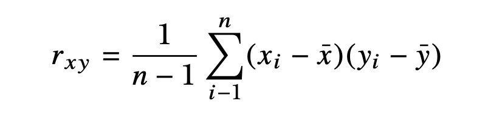
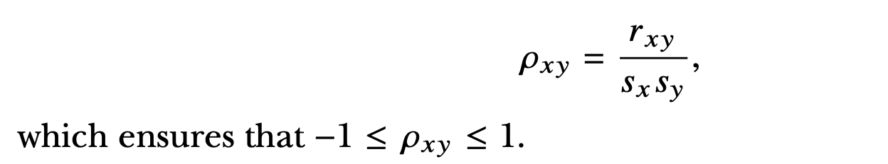
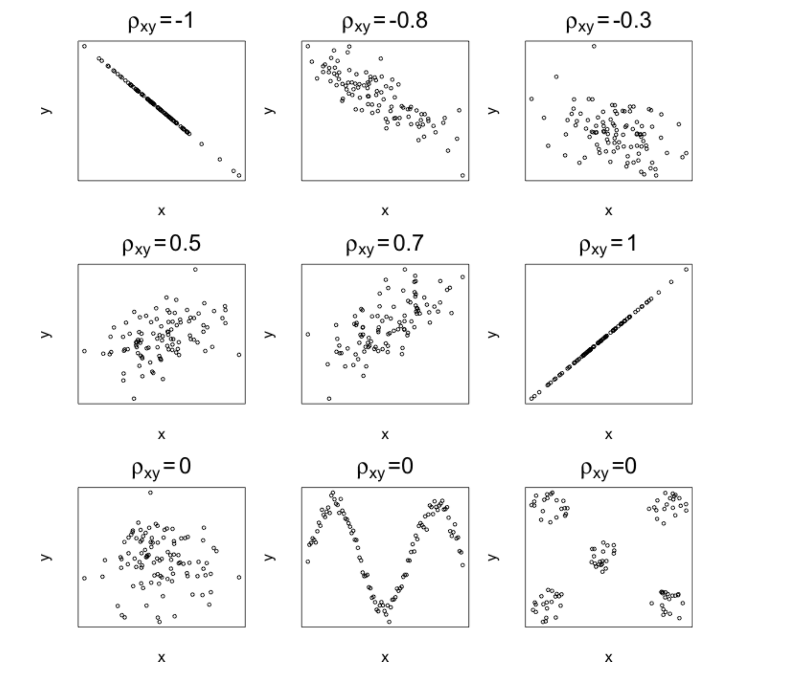

Code
getwd()
getwd()list.files()[1] "1 basic R.qmd" "1 basic R.rmarkdown"
[3] "1-basic-R.rmarkdown" "5 R boook.qmd"
[5] "6 data analytic in R book.qmd" "hotels.csv"
[7] "images" file.info("6 data analytic in R book.qmd")dir.create('testing_folder')file.remove('testing_folder')library(fs)
file_copy('test.csv', 'test2.csv')url="https://raw.githubusercontent.com/rfordatascience/tidytuesday/master/data/2020/2020-02-11/hotels.csv"
download.file(url = url, destfile = "hotels.csv")x <- -5
if(x > 0){
print("Non-negative number")
} else {
print("Negative number")
}[1] "Negative number"for (x in 1:4) {
print(x)
}[1] 1
[1] 2
[1] 3
[1] 4stuff <- list(12, 9, 2, "cat", 25, 10, "bird")
#stuffloop_num=0
for (i in stuff) {
loop_num=loop_num+1
tryCatch (print(1+i),
error = function(e){
message(paste("An error occurred for loop num", loop_num,":\n"), e)
})
}[1] 13
[1] 10
[1] 3
[1] 26
[1] 11i <- 1
while (i < 6) {
print(i)
i <- i + 1
}[1] 1
[1] 2
[1] 3
[1] 4
[1] 5with break statement
i <- 1
while (i < 6) {
print(i)
i <- i + 1
if (i == 4) {break}
}[1] 1
[1] 2
[1] 3my_function <- function() {
print("Hello World!")
}
my_function()[1] "Hello World!"adding_ten <- function(x) {
a=x+10
return(a)
}
adding_ten(5)[1] 15adding_ten <- function(x=10) {
a=x+10
return(a)
}
adding_ten(5)[1] 15if not define x, then x=10
adding_ten()[1] 20args(adding_ten)function (x = 10)
NULLMany functions exhibit variadic behavior. That is, they can accept any num- ber of arguments, and it’s up to the user to decide how many arguments to provide. The functions c, data.frame, and list are all like this. When you call a function like data.frame, you can specify any number of members as arguments.
args(data.frame)function (..., row.names = NULL, check.rows = FALSE, check.names = TRUE,
fix.empty.names = TRUE, stringsAsFactors = FALSE)
NULLprint out warning
adding_ten <- function(x=10) {
a=x+10
if(a>50){
warning('its better than 50')
}
return(a)
}adding_ten(100)[1] 110print out stop error message
adding_ten <- function(x=10) {
a=x+10
if(a>50){
stop('its better than 50')
}
return(a)
}adding_ten(100)try(adding_ten(100))[1] 1105+10[1] 15start_time=Sys.time()
v=matrix(1:100000000)
c=v*v
end_time=Sys.time()start_time[1] "2024-04-18 15:52:44 CST"end_time[1] "2024-04-18 15:52:45 CST"end_time-start_timeTime difference of 0.5823641 secsversion _
platform aarch64-apple-darwin20
arch aarch64
os darwin20
system aarch64, darwin20
status
major 4
minor 3.1
year 2023
month 06
day 16
svn rev 84548
language R
version.string R version 4.3.1 (2023-06-16)
nickname Beagle Scouts 99% of the time will install pacakge from The Comprehensive R Archive Network(cran).https://cran.r-project.org/

install.packages('tidyverse')pak::pkg_install("tidymodels/learntidymodels")pak::pkg_install("text2vec")pak::local_install("cli")packageVersion("tidyverse")[1] '2.0.0'pak::pkg_deps_explain("tibble", "rlang")tibble -> lifecycle -> rlang
tibble -> pillar -> lifecycle -> rlang
tibble -> pillar -> rlang
tibble -> pillar -> vctrs -> lifecycle -> rlang
tibble -> pillar -> vctrs -> rlang
tibble -> rlang
tibble -> vctrs -> lifecycle -> rlang
tibble -> vctrs -> rlangpak::pkg_deps_tree("tibble")tibble 3.2.1 ✨ ⬇ (684.10 kB)
├─fansi 1.0.6 ✨ ⬇ (381.01 kB)
├─lifecycle 1.0.4 ✨ ⬇ (124.48 kB)
│ ├─cli 3.6.2 ✨ ⬇ (1.39 MB)
│ ├─glue 1.7.0 ✨ ⬇ (159.26 kB)
│ └─rlang 1.1.3 ✨ ⬇ (1.89 MB)
├─magrittr 2.0.3 ✨ ⬇ (232.43 kB)
├─pillar 1.9.0 ✨ ⬇ (648.86 kB)
│ ├─cli
│ ├─fansi
│ ├─glue
│ ├─lifecycle
│ ├─rlang
│ ├─utf8 1.2.4 ✨ ⬇ (206.92 kB)
│ └─vctrs 0.6.5 ✨ ⬇ (1.88 MB)
│ ├─cli
│ ├─glue
│ ├─lifecycle
│ └─rlang
├─pkgconfig 2.0.3 ✨ ⬇ (18.21 kB)
├─rlang
└─vctrs
Key: ✨ new | ⬇ downloadsessionInfo()R version 4.3.1 (2023-06-16)
Platform: aarch64-apple-darwin20 (64-bit)
Running under: macOS Sonoma 14.1.1
Matrix products: default
BLAS: /Library/Frameworks/R.framework/Versions/4.3-arm64/Resources/lib/libRblas.0.dylib
LAPACK: /Library/Frameworks/R.framework/Versions/4.3-arm64/Resources/lib/libRlapack.dylib; LAPACK version 3.11.0
locale:
[1] en_US.UTF-8/en_US.UTF-8/en_US.UTF-8/C/en_US.UTF-8/en_US.UTF-8
time zone: Asia/Shanghai
tzcode source: internal
attached base packages:
[1] stats graphics grDevices utils datasets methods base
loaded via a namespace (and not attached):
[1] digest_0.6.35 R6_2.5.1 fastmap_1.1.1 xfun_0.43
[5] knitr_1.45 htmltools_0.5.8.1 rmarkdown_2.26 ps_1.7.6
[9] cli_3.6.2 processx_3.8.4 callr_3.7.6 pak_0.7.2
[13] compiler_4.3.1 rstudioapi_0.16.0 tools_4.3.1 evaluate_0.23
[17] yaml_2.3.8 rlang_1.1.3 jsonlite_1.8.8 htmlwidgets_1.6.4ip = as.data.frame(installed.packages()[,c(1,3:4)])
ip = ip[is.na(ip$Priority),1:2,drop=FALSE]
head(ip) Package Version
abind abind 1.4-5
anytime anytime 0.3.9
applicable applicable 0.1.0
archive archive 1.1.7
arrow arrow 15.0.1
askpass askpass 1.2.0.libPaths()[1] "/Library/Frameworks/R.framework/Versions/4.3-arm64/Resources/library"The time interval to suspend execution for, in seconds.
Sys.sleep(3)Terminal
open -n /Applications/RStudio.appWhen analyzing data, it’s often useful to be able to investigate the rela- tionship between two numeric variables to assess trends. For example, you might expect height and weight observations to have a noticeable positive relationship—taller people tend to weigh more. Conversely, you might imag- ine that handspan and length of hair would have less of an association. One of the simplest and most common ways such associations are quantified and compared is through the idea of correlation, for which you need the covariance. The covariance expresses how much two numeric variables “change together” and the nature of that relationship,

Pearson’s sample correlation coef- ficient ρxy is computed by dividing the sample covariance by the product of the standard deviation of each data set

Some Correlation Example:
